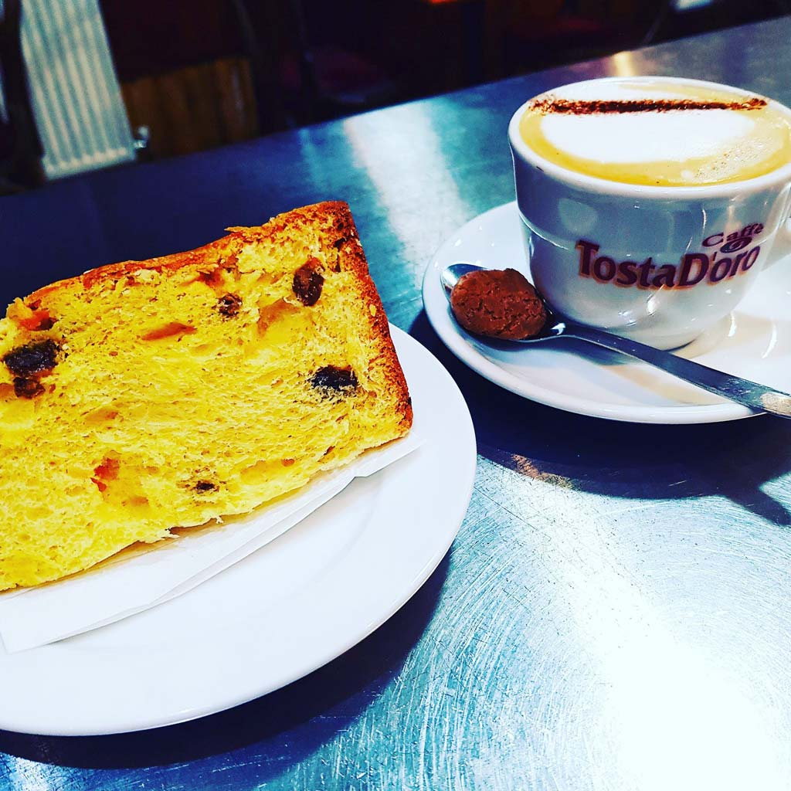
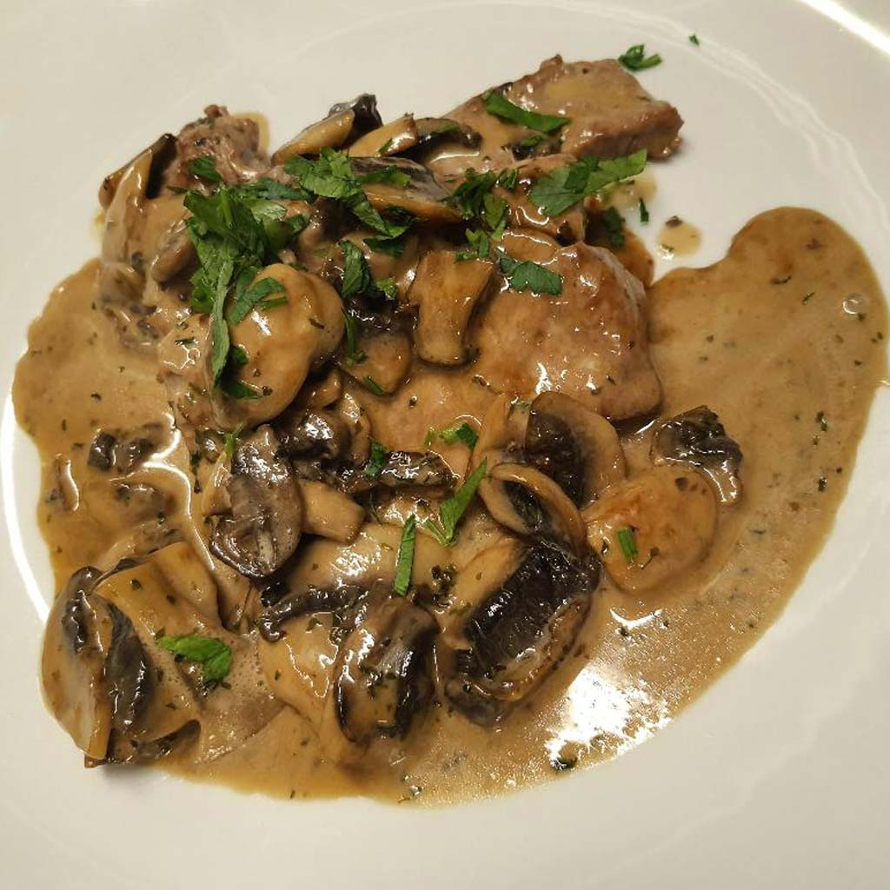

Italian café & restaurant · Halford Street
A little Italy.
Right here.
From a first coffee to a table full of good food. Come to Roma for home-made Italian cooking in the heart of Leicester.
11 Halford Street · Leicester · LE1 1JA

Made for the table
Good food.
Good company.
Family-run, relaxed and unmistakably Italian. Roma’s published dishes range from bruschetta and meatballs to pasta and main courses, with Italian coffee for the moments in between.
Find a table on Dojo
A meal worth getting together for
Who’s joining you?
A catch-up, family lunch or celebration. Put your plans into a few clear notes, then speak to Roma about the details.
Local enquiry demo. Nothing is sent, stored or reserved. Use sample details only. For real availability, continue to Dojo or call the restaurant.
Speak to Roma · 0116 251 5959Your dining notes
Demo only — nothing was sent or booked.
Call the restaurantCheck availability on DojoA table on Halford Street
Come over.
Roma Café Bar & Restaurant11 Halford Street
Leicester, LE1 1JAOpen directions
Published regular service
From Roma’s official site, checked 20 October 2026. Call for seasonal changes.
- Wednesday to Saturday
- Café, brunch & lunch · 09:30–16:00
Evening restaurant · from 16:00
Last bookings · 20:30 - Sunday, Monday & Tuesday
- Closed for regular service
Booking availability is confirmed on Dojo or by the team.
Reserve on Dojo